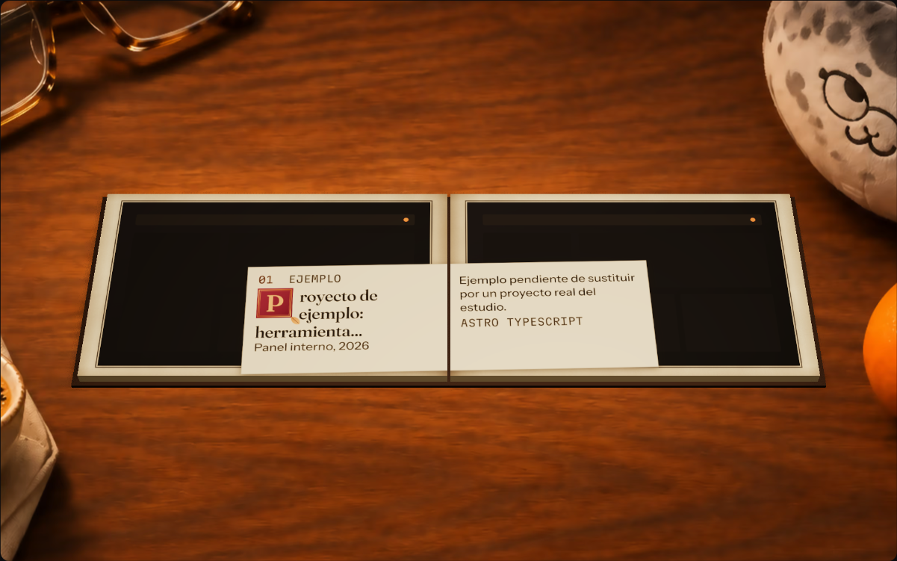

Pliegos de proyecto (en curso)
Primera prueba: la primera pantalla del proyecto a la izquierda, el clip a la derecha (aquí aún sin imagen real) y la ficha cruzando el pliegue. Para que el texto no baje de 12 px con la cámara inclinada, la ficha ocupa cerca de un tercio de cada pantalla, más de lo que imaginábamos como "pequeña". El título ya no se cortará con puntos suspensivos. Volver.
Escritorio, 1440 × 900

